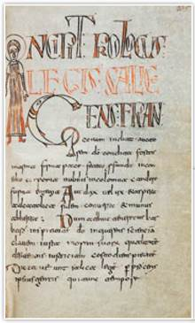
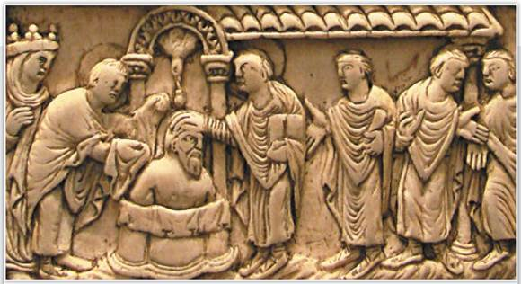
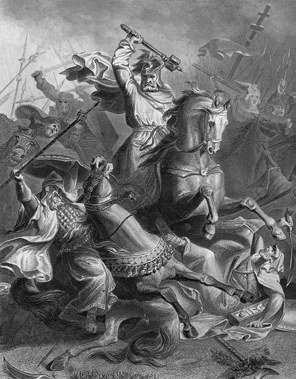
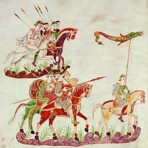
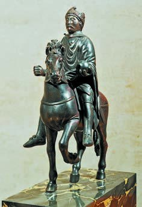
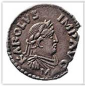
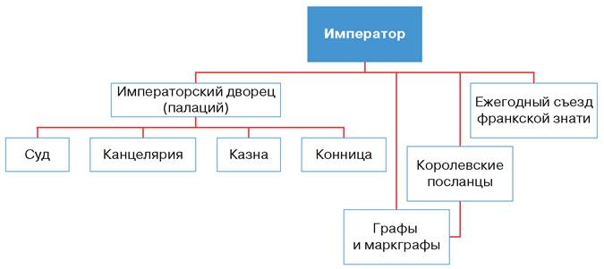
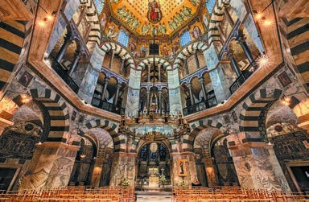

От Хлодвига к Карлу Великому
Амина, это история о единственном германском королевстве, которое не развалилось, а выросло в империю.
Помнишь из § 1: германцы заняли комнаты в старом римском доме, и почти все их королевства быстро развалились? Все, кроме одного. Франки построили на месте римской Галлии королевство, которое стояло сотни лет и выросло в целую империю.
Почему у них получилось? Три вещи. Франки приняли ту же веру, что и местные жители, и слились с ними в один народ. Они записали законы и посадили в областях своих людей, графов. И придумали, как содержать конное войско: давать воинам землю за службу.
Главный вопрос параграфа: почему Франкское королевство оказалось самым прочным из германских королевств? Запомни четыре имени:
У каждого шага написано, какой это пункт параграфа. Внизу шага есть «Подробнее, как в учебнике»: там всё, что есть в этом пункте, ничего не пропущено. Сначала учи по коротким шагам, а перед уроком открой «подробнее».
Надпись вверху шага подскажет, откуда он: синяя — из учебника, золотая — задание учебника, оранжевая — сверх учебника (пересказ, словарик, игры, самопроверка). В «Содержании» шаги так же разбиты на группы.
Подробнее, как в учебнике · с. 29
- Главный вопрос параграфа: почему Франкское королевство оказалось самым прочным из германских королевств?
- Иллюстрация в начале параграфа: крещение Хлодвига. Резьба по слоновой кости, фрагмент, IX век.
- Рассказ под картинкой: крещение Хлодвига окутано тайной. Согласно легендам, когда его войска сражались против союза германских племён, король дал обет: он примет христианскую веру в том случае, если победит. После победы Хлодвиг и его воины прошли обряд крещения. Во время таинства к Хлодвигу прилетел ангел, обратившись голубем. Он принёс сосуд с елеем — маслом для помазания. Позже этот сосуд стал одной из главных французских реликвий (Святая Стеклянница). Во время Французской революции XVIII века она была прилюдно разбита одним из революционеров.
- Слова параграфа: граф, династия, «Каролингское возрождение», майордом, феод. Люди: Хлодвиг, Карл Мартелл, Пипин Короткий, Карл Великий. Все они есть в словарике.
- Таблица дат параграфа разобрана на следующем шаге.
Лента времени
Это все даты из таблицы в начале параграфа, сверху вниз от ранних к поздним. Нажми на дату, чтобы прочитать, что случилось. Красные помечены «Россия», как в учебнике.
Два события «Россия» здесь про Крым и хазар. Хазарский каганат — государство между Каспием и Чёрным морем, и его ранняя столица Семендер стояла на землях нынешнего Дагестана, у Каспия. А 862 год — начало самой Руси: на княжение позвали варяга Рюрика. Кто такие варяги, узнаешь в § 4.
Ещё даты, которые встречаются в тексте параграфа
- 481–511 гг. — правление Хлодвига (п. 1).
- Конец V в. — у Хлодвига не осталось соперников (п. 1).
- VI–VII вв. — раздоры потомков Хлодвига, «ленивые короли» (п. 2).
- Начало VIII в. — арабы перешли Пиренеи (п. 2).
- 732 г. — битва при Пуатье (п. 2).
- 715–741 гг. — Карл Мартелл майордом (п. 2).
- 741–768 гг. — Пипин Короткий; в середине VIII в. провозглашён королём (п. 2).
- 768–814 гг. — Карл Великий (п. 3). 30 лет он воевал с саксами.
- VI в. — авары поселились на Дунае (п. 3).
Эти даты потом пригодятся в игре «Расставь по порядку».
1Хлодвиг берёт Галлию
Франки жили по нижнему течению Рейна. Во время Великого переселения народов они вошли в римскую провинцию Галлию. В 486 году их вождь Хлодвиг (481–511) из рода Меровингов разбил галло-римлян в битве при Суассоне и захватил большую часть Галлии.
Франков было в десятки раз меньше, чем местных. Каждый воин получил участок земли и сам его обрабатывал. Франки остались свободными, ходили в походы и на суд, жили по старым обычаям.
Но король брал себе самую большую долю добычи и щедро одаривал слуг и дружинников. Так рядом с маленькими хозяйствами простых франков и галло-римлян выросли большие владения короля и его приближённых.
Хлодвиг хотел править один. Он приказал истребить всех, кто мог претендовать на трон: других вождей и даже собственных родственников. К концу V века соперников не осталось.
Хитрость Хлодвига
Когда все родственники были истреблены, Хлодвиг хитростью искал тех, кто мог быть его дальней роднёй. Он жаловался соплеменникам: «Горе мне, я остался, как странник среди чужой земли, и не имею родственников, которые могли бы мне помочь в случае несчастья!» Он надеялся, что кто-нибудь пожалеет его и признается в родстве. А значит, выдаст себя.
Подробнее, как в учебнике · с. 30, п. 1
- Пункт 1 «Франки и их король Хлодвиг». Во время Великого переселения народов франки, жившие по нижнему течению Рейна, вторглись на территорию римской провинции Галлия. В 486 году, разгромив галло-римские войска в битве при Суассоне (город на севере современной Франции), они во главе со своим вождём Хлодвигом (481–511) из рода Меровингов захватили большую часть Галлии.
- Франков было в десятки раз меньше, чем местных жителей. Каждый франкский воин получил земельный участок, который сам и обрабатывал. Франки сохраняли свою свободу и старинные обычаи, участвовали в военных походах и в судебных заседаниях.
- Имея наибольшую долю в военной добыче, Хлодвиг щедро одаривал своих слуг и дружинников. Так рядом с мелкими хозяйствами простых франков и галло-римлян появлялись крупные владения короля и его приближённых.
- Хлодвиг мечтал стать единственным правителем всех франков. С этой целью он приказал истребить всех тех, кто мог претендовать на трон: военных вождей и своих родственников. К концу V века соперников у него не осталось.
- Врезка «Подробнее»: когда были истреблены все родственники Хлодвига, он, одержимый жаждой единоличной власти, пытался с помощью хитрости выявить тех, кто в силу дальнего родства с ним мог претендовать на трон. В надежде, что кто-то выдаст себя, он говорил своим соплеменникам: «Горе мне, я остался, как странник среди чужой земли, и не имею родственников, которые могли бы мне помочь в случае несчастья!»
1«Салическая правда» и графы
Судили франки по старым обычаям. Чтобы их не забыли и не переиначили, Хлодвиг приказал записать судебные правила. Так появилась «Салическая правда». Название от салических, то есть западных, франков: по-латыни «salis» значит «морское побережье».
Управлять целой Галлией как племенем уже не получалось. Что изменилось:
- центром власти стал королевский двор;
- народные собрания больше не созывали, франки съезжались только раз в год на военный смотр;
- на войну собирали ополчение, но постоянной силой была преданная королю дружина;
- областями управляли доверенные люди короля, графы.
Сравни с § 1: у германцев вождь в мирное время ничего не мог приказать. А Хлодвиг уже настоящий король с двором, законами и наместниками.

Подробнее, как в учебнике · с. 30–31, п. 1
- Иллюстрация: «Салическая правда». Рукопись, VIII век.
- Суд франков по-прежнему происходил в соответствии с древними обычаями. Чтобы закрепить их, Хлодвиг приказал записать судебные правила. Они получили название «Салическая правда» (по названию германского племени западных (салических) франков, обитавшего на территории современных Франции и Бельгии; от латинского salis — морское побережье).
- Управлять Галлией так же, как племенем, вождь франков уже не мог. Центром власти стал королевский двор. Народные собрания уже не созывались, и только раз в году франки съезжались на военные смотры. В случае войны собиралось ополчение, а многочисленные и преданные королю дружинники были постоянной военной силой. Отдельными областями управляли доверенные люди Хлодвига — графы.
1Крещение Хлодвига: главный ход
Когда Хлодвиг завоёвывал Галлию, он был язычником. Потом он принял христианство. За ним крестилась дружина, а потом и все франки.
И вот самое важное. Помнишь из § 1: остготы и другие германцы были арианами, а римляне нет, и вера их разделяла? Франки поступили иначе: они приняли христианство по римскому образцу, как местные жители.
Что это дало:
- Церковь стала верной союзницей франкских королей;
- епископы учили, что всякая власть от Бога, и это укрепило власть Хлодвига над франками и галло-римлянами;
- жителей Галлии больше не разделяла вера, и они постепенно слились в один народ.
Это первый кирпичик ответа на главный вопрос параграфа.
Легенда о крещении Хлодвига (учебник, с. 29)
Как именно крестился Хлодвиг, точно никто не знает. По легенде, в битве с союзом германских племён он дал обет: если победит, то примет христианство. Он победил, и вместе с воинами крестился.
Во время крещения прилетел ангел в образе голубя и принёс сосуд с елеем, то есть маслом для помазания. Этот сосуд, Святую Стеклянницу, потом хранили во Франции как одну из главных святынь. Во время Французской революции XVIII века его прилюдно разбил один из революционеров.

Подробнее, как в учебнике · с. 31, п. 1
- Когда Хлодвиг завоёвывал Галлию, он был ещё язычником, но позже принял христианство. Примеру короля последовала дружина, а затем и остальные франки.
- В отличие от других германцев, франки приняли христианство не в форме арианства, а по римскому образцу. Так Хлодвиг добился поддержки Церкви, которая стала верной союзницей франкских королей. Поскольку, как учили епископы, всякая власть дана от Бога, принятие христианства укрепило господство Хлодвига над соплеменниками и галло-римлянами. Жители Галлии, которых теперь не разделяла вера, постепенно слились в один народ.
- Вопросы учебника после пункта 1: какие изменения в управлении франками произошли при Хлодвиге? Что такое «Салическая правда»? Зачем королю потребовалось её создавать?
2«Ленивые короли» и майордомы
VI–VII века стали для королевства тяжёлым временем. Потомки Хлодвига делили власть и устраивали кровавые раздоры, страна разорялась. Власть последних Меровингов слабела, а знать усиливалась и забирала земли, которые раньше принадлежали королям.
Самыми влиятельными людьми стали майордомы, управляющие королевским дворцом. Представь: у хозяина дома есть управляющий, который решает все дела, а хозяин только сидит на троне. Постепенно вся власть перешла к майордомам, а Меровингов современники прозвали «ленивыми королями».
Подробнее, как в учебнике · с. 31, п. 2
- Пункт 2 «„Ленивые короли“ и энергичные майордомы». VI–VII века стали для Франкского королевства тяжёлым временем. Кровавые раздоры между потомками Хлодвига разоряли страну. Власть последних Меровингов слабела, зато усиливалась знать. К ней перешли многие земли, прежде принадлежавшие королям.
- Наиболее влиятельными лицами стали управляющие королевским дворцом — майордомы. Постепенно вся власть в государстве оказалась в их руках, а лишённых всякого влияния Меровингов современники стали называть «ленивыми королями».
2732 год: битва при Пуатье
В начале VIII века пришла беда. Арабы, о которых ты читала в § 2, завоевали почти всю Испанию, перешли Пиренейские горы и вторглись во Франкское королевство.
В 732 году при Пуатье войско франков во главе с майордомом Карлом разгромило арабов. Хронист писал, что франки стояли стеной, «словно воедино смёрзшиеся фигуры, изваянные изо льда», и лёд этот не таял, даже когда они рубили арабов мечами. За победу Карл получил прозвище Мартелл, «Молот».
Но догнать и добить арабов франки не смогли. У арабов была многочисленная конница, а у франков — тяжёлая пехота из свободных общинников. Ополчение собирали от случая к случаю, и оно теряло боевые навыки. Карлу Мартеллу (715–741) нужно было новое, хорошо вооружённое конное войско.

Подробнее, как в учебнике · с. 31–32, п. 2
- В начале VIII века над Франкским королевством нависла грозная опасность. Арабы, завоевавшие почти всю Испанию, перешли Пиренеи и вторглись в пределы Франкского королевства. В 732 году при Пуатье состоялась битва, в которой войско франков во главе с майордомом Карлом разгромило арабов.
- Любопытные детали: хронист так описывал события битвы при Пуатье: «Северяне замерли стеной, словно воедино смёрзшиеся фигуры, изваянные изо льда; лёд этот не способен был растаять, даже когда своими мечами они разили арабов». За эту победу над врагами Карл получил прозвище Мартелл, что означало «Молот».
- Однако догнать отступавших врагов и истребить их окончательно франки не смогли, поскольку, в отличие от арабов, не имели многочисленной конницы. Основу франкского войска составляла тяжеловооружённая пехота, состоявшая из свободных общинников. Но ополчение, собиравшееся от случая к случаю, постепенно теряло боеспособность. Карлу Мартеллу (715–741) необходимо было создать новое, хорошо вооружённое конное войско.
- Иллюстрация: битва при Пуатье. Гравюра XIX века. Вопрос учебника: какой исторический деятель изображён в центре гравюры? Что даёт основание так думать? Подсказка: в центре всадник с поднятым оружием, который ведёт франков в бой; подумай, кто командовал войском и что означает его прозвище.
2Земля за службу: феод
Конь и доспехи стоят дорого, а воину некогда пахать. Как быть? Карл Мартелл придумал: раздавать воинам землю вместе с крестьянами, которые её обрабатывают. С дохода воин покупает коня и оружие и занимается только военным делом.
Но землю давали не насовсем, а в условную собственность: при условии, что воин служит. Не служишь — землю отбирают. Как школьный ноутбук: пользуешься, пока учишься.
Со временем воины захотели передавать землю детям. Правителям пришлось согласиться, лишь бы наследник тоже служил. Такое пожалование назвали феод. Реформа укрепила власть майордома: теперь у него было своё конное войско.
Зачем нужно было именно конное войско?
Пехота хороша, чтобы стоять стеной, как при Пуатье. Но арабы ускакали, и догнать их пешком было невозможно. Всадник быстрее, сильнее в атаке и может преследовать врага. Только содержать всадника дорого, поэтому и понадобилась земля за службу.
Подробнее, как в учебнике · с. 32, п. 2
- Чтобы содержать конное войско, майордом стал раздавать воинам земли вместе с обрабатывавшими их крестьянами. На получаемый с земли доход владелец мог приобрести боевого коня, вооружение и заниматься военным делом, не отвлекаясь на ведение хозяйства.
- Но земля передавалась новым хозяевам не насовсем, а лишь в условную собственность, то есть при условии несения военной службы. У тех, кто не выполнял условий, землю отбирали.
- На первых порах воины-землевладельцы были удовлетворены таким положением дел. Но со временем они всё чаще стремились передать свои земли по наследству, и правителям приходилось с этим соглашаться — лишь бы новый владелец продолжал нести воинскую службу. Такие земельные пожалования получили название феод. Проведённые реформы укрепили власть майордома.
2Пипин Короткий и Папское государство
Сын Карла Мартелла, Пипин (741–768), прозванный за малый рост Коротким, не хотел оставаться майордомом при «ленивом короле». В середине VIII века при поддержке папы римского его провозгласили королём франков. Последнего Меровинга отправили в монастырь. Так началась новая династия.
Пипин отблагодарил папу: помог ему в борьбе с лангобардами, которые напали на Рим, и отдал папе часть отнятых у них земель. Так возникло Папское государство (Папская область). Оно просуществовало больше тысячи лет, а его часть, Ватикан в Риме, есть и сегодня.
Смотри, как всё связано: папа помог Пипину стать королём, Пипин подарил папе государство. Союз королей франков с Церковью стал ещё крепче.
Подробнее, как в учебнике · с. 32, п. 2
- Сын Карла Мартелла Пипин (741–768), прозванный за малый рост Коротким, уже не хотел довольствоваться титулом майордома. При поддержке папы римского в середине VIII века он был провозглашён королём франков. Последний из Меровингов был отправлен в монастырь.
- Новый король отблагодарил папу, оказав ему помощь в борьбе с племенем лангобардов, напавших на Рим. Часть земель, отнятых у варваров, Пипин передал папе римскому. Так возникло Папское государство (или Папская область), просуществовавшее более тысячелетия. Его часть — Ватикан в Риме — сохранилась до наших дней.
- Вопросы учебника после пункта 2: кого называли «ленивыми королями»? Какова была их судьба? Когда состоялась битва при Пуатье и какие результаты она имела?
3Войны Карла Великого
Сын Пипина, Карл Великий (768–814), почти всю жизнь провёл в войнах и совершил десятки удачных походов. С кем он воевал:
- Лангобарды в Италии: разбил окончательно и присоединил их королевство.
- Авары, кочевники на Дунае с VI века: разгромил, их держава исчезла, а сокровища, награбленные за несколько веков, ушли в казну Карла.
- Арабы в Испании: поход вглубь страны не удался, а на обратном пути в Пиренеях разгромили отряд, прикрывавший отход войска. Об этом сложили «Песнь о Роланде». Позже Карл всё же присоединил небольшую область на северо-востоке Испании.
- Саксы, язычники на северо-востоке: 30 лет войны. В открытом бою саксы проигрывали, но стоило франкам уйти, как они восставали и возвращались к язычеству. Карл покорил их самыми суровыми мерами.
В походах участвовала знать и получала большую часть земель и добычи. Королевство выросло почти вдвое, Карл стал владыкой почти всего христианского Запада.

Подробнее, как в учебнике · с. 32–33, п. 3
- Пункт 3 «Карл Великий: создание империи». Сын Пипина Короткого Карл Великий (768–814) почти всю жизнь провёл в войнах и стал одним из самых известных правителей средневековой Европы. Во главе своего войска он совершил десятки успешных походов. Сначала Карл окончательно разбил в Италии лангобардов и присоединил их королевство. Затем разгромил кочевников-аваров, которые с VI века жили на Дунае, совершая набеги на соседей. Держава аваров перестала существовать, а награбленные ими за несколько веков сокровища пополнили королевскую казну.
- Иллюстрация: франкские воины. Миниатюра, IX век. Задание учебника: опишите вооружение франкских воинов.
- Много лет Карл воевал с арабами, захватившими Испанию, бывшую римскую провинцию. Однако его поход вглубь этой страны оказался неудачным, а на обратном пути отряд, прикрывавший отход королевского войска, был разгромлен в Пиренейских горах. Это событие легло в основу произведения средневековой литературы — «Песни о Роланде». Позже Карл всё же смог присоединить к своим владениям небольшую область на северо-востоке Испании.
- Карл хотел объединить под своей властью все германские племена. Для этого на протяжении 30 лет он вёл войны с саксами — язычниками, жившими на северо-востоке от Франкского королевства. Противостоять франкам в открытом сражении саксы не могли. Но как только франкские войска покидали земли саксов, те, казалось бы, усмирённые и обращённые в христианство, восставали и возвращались к язычеству. Карл прибег к самым суровым мерам, с огромным трудом сумев покорить саксов.
- Во всех походах Карла активно участвовала франкская знать. В её руки попадала значительная часть захваченных земель и добычи. В результате завоеваний королевство Карла Великого выросло едва ли не вдвое. Он стал владыкой почти всего христианского Запада.
3800 год: снова император
О Карле сложили множество легенд как о могучем воине и мудром правителе. От его имени пошло название династии, Каролинги, и само слово «король» в славянских языках. Да-да, «король» — это «Карл».
В 800 году папа римский провозгласил Карла императором. Это событие мирового значения: после перерыва в три с лишним века (вспомни 476 год из § 1) в Европе возродилось государство-преемник Западной Римской империи.
На печатях Карла написали «восстановление Римской империи». Но на деле его держава была мало похожа на Древний Рим. Карл строил христианское государство, которое объединило бы все народы Европы. Собрать в одно целое совершенно разные земли, завоёванные предками и им самим, оказалось очень трудно.


Статуэтка и монета: чем Карл подражал Риму
В учебнике есть бронзовая статуэтка Карла на коне (IX век). Такие конные статуи делали ещё в Древнем Риме. В левой руке у Карла держава, шар, который означает власть над миром; меч из правой руки не сохранился.
А на серебряной монете написано KAROLUS IMP AVG: «Карл император август». «Август» — так называли себя римские императоры. Значит, монету отчеканили не раньше 800 года, когда Карл получил титул, и не позже 814 года, когда он умер. И само слово «август» показывает, что Карл равнялся на Рим.
Подробнее, как в учебнике · с. 33–34, п. 3
- Иллюстрация: Карл Великий, бронзовая статуэтка IX века. Подпись: на создание этой статуэтки повлияла античная традиция конных статуй. Меч, который находился в правой руке Карла, не сохранился. В левой руке у него держава, то есть шар, символизирующий власть над миром.
- Иллюстрация на с. 34: серебряная монета с изображением Карла Великого. Надпись на монете: КАРЛ ИМПЕРАТОР АВГУСТ. Задание учебника: определите промежуток времени, в который была отчеканена эта монета, аргументируйте свою точку зрения. Как монета свидетельствует о том, что Карл Великий восхищался античностью? Подсказка в раскрывашке выше.
- Со временем сложилось множество легенд о Карле как о могучем воине и мудром правителе. От его имени происходит и название династии королей — Каролинги, и слово «король» в славянских языках.
- Расширение авторитета и власти государя франков было закреплено титулом императора. Императором в 800 году Карла провозгласил папа римский. Свершилось событие мирового значения: после более чем трёхвекового перерыва в Европе возродилось государство — преемник Западной Римской империи.
- На печатях Карла появились слова «восстановление Римской империи», но, по сути, его держава имела мало общего с Древним Римом. Карл стремился к созданию христианского государства, которое бы объединило под его властью все народы Европы. Он энергично занялся обустройством империи, пытаясь создать единое целое из совершенно разных земель, когда-то завоёванных его предками и им самим. Но эта задача оказалась слишком сложной.
3Как управлялась империя
Главным органом управления оставался двор правителя. На местах правили графы, которых назначал император; с ростом территории графств стало больше. Чтобы графы не своевольничали, Карл рассылал по областям «государевых посланцев», ревизоров-проверяющих.
Союз с Церковью стал ещё крепче: Карл ей покровительствовал и давал поручения епископам, священникам и настоятелям монастырей, они тоже участвовали в управлении.
Схема из заданий учебника. Она понадобится для восьмого вопроса, где её надо сравнить со схемой Византии из § 2:

Подсказка к сравнению с Византией
Открой схему Византии на шаге 5 из § 2. Там Сенат и префекты, то есть органы из Древнего Рима, и канцелярии для налогов и казны. У Карла вместо Сената — съезд франкской знати, а вместо префектов — графы, то есть племенные германские порядки. Подумай, у кого больше похоже на античную державу.
Подробнее, как в учебнике · с. 34, п. 3
- Центральным органом управления оставался двор правителя. На местах власть по-прежнему находилась в руках графов, которых назначал император. С расширением территории число графств увеличилось. Контролировать графов императору помогали «государевы посланцы» — ревизоры, которых Карл рассылал во все области.
- Упрочился союз императора с Церковью. Карл ей покровительствовал и давал поручения епископам, священникам и настоятелям монастырей, которые тоже участвовали в управлении.
- Вопросы учебника после пункта 3: с кем воевал Карл Великий? С помощью карты 4 (см. Приложение) выделите этапы расширения королевства франков: какие территории оказались в зависимости или были завоёваны Карлом Великим? Почему военные походы Карла Великого поддерживала знать? Вспомните, когда прекратила своё существование Западная Римская империя. Почему принятие Карлом Великим императорского титула было важно?
- Схема «Управление империей Карла Великого» из заданий в конце параграфа: император; ему подчиняются императорский дворец (палаций) с судом, канцелярией, казной и конницей, королевские посланцы, графы и маркграфы, ежегодный съезд франкской знати.
4«Каролингское возрождение»
Подъём культуры при Карле Великом и его ближайших преемниках назвали «Каролингским возрождением». Возрождали то, что почти погибло после падения Рима: школы, книги, интерес к Античности.
Сам Карл для своего времени был хорошо образован: читал и говорил по-латыни, понимал греческий, знал труды Отцов Церкви. Но вот писать так и не выучился! Он звал ко двору лучших учёных и поэтов Европы и мечтал создать вокруг себя «Новые Афины».
- При дворе Карл организовал Академию: учёные, придворные, сам император и его семья беседовали о Библии и об Античности.
- Один из приближённых Карла, подражая античным авторам, написал книгу «Жизнь Карла Великого». Это главный источник наших знаний об императоре.
- Карл велел исправить богослужебные книги: за века малограмотные писцы наделали в них ошибок, а без правильных книг нельзя правильно служить Богу.
- При дворе и в больших монастырях открыли школы. В монастырях переписывали не только церковные книги, но и античных авторов.
Возрождение было недолгим. Но благодаря ему сохранились многие античные знания, и на них выросла культура Средневековья.
Подробнее, как в учебнике · с. 35–36, п. 4
- Пункт 4 «„Каролингское возрождение“». Подъём культуры во Франкском королевстве во время правления Карла Великого и его ближайших преемников получил название «Каролингское возрождение». Оставаясь верующим христианином, Карл Великий проявлял интерес к античной культуре. Для правителя той эпохи он был хорошо образован: читал и говорил по-латыни, понимал греческую речь, знал труды Отцов Церкви, хотя писать так и не выучился. Император поощрял развитие наук и искусств, приглашал к своему двору лучших учёных и поэтов со всей Европы, мечтая создать вокруг себя «Новые Афины».
- При императорском дворе Карл организовал Академию, которая объединила учёных, придворных, самого императора и членов его семьи. Члены Академии вели беседы на разные темы. Их интересовали и Библия, и Античность. Один из приближённых Карла, подражая античным авторам, написал позже книгу «Жизнь Карла Великого» — главный источник наших сведений об императоре.
- Большое внимание император уделял переписыванию богослужебных книг. На протяжении веков при копировании малограмотные писцы делали в них много ошибок. Карл считал исправление книг необходимым, ведь иначе нельзя было правильно служить Богу. При дворе франкского государя и в крупных монастырях были устроены школы для обучения грамоте и основам наук. Кроме богослужебных книг, в монастырях переписывали труды античных авторов.
- «Каролингское возрождение» оказалось недолгим. Однако благодаря ему были сохранены многие античные знания и традиции. Достижения этого периода стали основой дальнейшего развития средневековой культуры.
- Вопросы учебника после пункта 4: что такое «Каролингское возрождение»? Почему Карл Великий считал важным делом исправление богослужебных книг?
4Ахен: столица с горячими источниками
Долгое время у Карла вообще не было столицы: он вместе со всем двором разъезжал по владениям. Потом выбрал Ахен, город на западе нынешней Германии. Он удобно стоял в центре торговых путей, а ещё там были горячие минеральные источники, в которых император любил купаться.
В Ахене Карл построил большой дворец. В одном его крыле были зал для приёмов, покои императора и его семьи, а ещё школа, библиотека и архив. Длинный переход вёл из зала в дворцовую церковь, капеллу. Она стоит до сих пор, хоть и с изменениями.
А теперь связь с § 2. Образцом для церкви послужил византийский храм Сан-Витале в Равенне, тот самый, где на стене мозаика с Юстинианом. Папа римский разрешил Карлу вывезти из Равенны в Ахен античные мраморные колонны и мозаики. Современники называли постройки в Ахене «чудом дивной и высокой красоты».

Подробнее, как в учебнике · с. 35, п. 4
- Любопытные детали: долгое время у Карла Великого не было столицы, и он вместе с королевским двором разъезжал по своим владениям. Позже император выбрал своей главной резиденцией Ахен (город на западе современной Германии). И не только из-за его выгодного расположения в центре торговых путей. Здесь имелись горячие минеральные источники, в которых император любил купаться.
- Карл выстроил в Ахене большой дворец. В одном его крыле находились зал для приёмов, покои императора и его семьи, а также школа, библиотека и архив. Длинный переход соединял зал с дворцовой церковью — капеллой, сохранившейся, хотя и с изменениями, до наших дней. Образцом для неё послужил византийский храм Сан-Витале в Равенне. Папа римский разрешил Карлу перевезти в Ахен античные мраморные колонны и мозаики из Равенны. Современники называли постройки в Ахене «чудом дивной и высокой красоты».
- Иллюстрация: капелла Ахенского собора, сохранившаяся часть дворца Карла Великого. Современная фотография.
5843 год: внуки делят империю
Империя ненадолго пережила своего создателя. В 843 году в Вердене три внука Карла заключили договор о разделе:
Потомки Лотаря не удержали наследство: часть поделили между собой, остальное завоевали соседи. Империи не стало, и титул императора вышел из употребления.
Почему распад был закономерным. Три причины из учебника:
- огромную территорию объединила сила оружия, а жили там племена и народы, у которых не было почти ничего общего, даже язык разный;
- между частями страны почти не было хозяйственных связей: не торговали друг с другом;
- короли раздавали знати новые земли и тем самым ослабляли свою власть.
Подробнее, как в учебнике · с. 36, п. 5 и «Подведём итоги»
- Пункт 5 «Верденский раздел». Империя Карла Великого ненадолго пережила своего создателя. В 843 году в Вердене (город на северо-востоке современной Франции) три внука императора заключили договор о её разделе. Старший внук, Лотарь, стал императором. Он получил богатые земли, протянувшиеся длинной, но довольно узкой полосой от Северного моря до Средиземного: Италию, Прованс, Бургундию и территорию современных Нидерландов. Средний внук получил земли к востоку от владений старшего — Восточно-Франкское королевство (будущая Германия), младший — к западу, Западно-Франкское королевство (будущая Франция).
- Потомки Лотаря не смогли сохранить его наследство: часть империи была поделена между ними, а остальные территории завоевали соседи. Империи не стало, и императорский титул тоже вышел из употребления.
- Распад империи Карла Великого был закономерным. Огромная территория, объединённая силой оружия, была населена племенами и народами, не имевшими между собой почти ничего общего. Они говорили на разных языках. Между отдельными частями страны практически отсутствовали хозяйственные связи. Наконец, короли, жалуя знати новые земли, тем самым постепенно ослабляли свою власть.
- Вопросы учебника после пункта 5: сколько лет просуществовала империя Карла Великого? Покажите на карте 9 (см. Приложение) и оцените преимущества и недостатки владений старшего из внуков Карла — Лотаря.
- «Подведём итоги»: в ходе завоевания Галлии франками возникло Франкское королевство. Оно оказалось наиболее прочным из всех германских государств. Наивысшего могущества государство достигло при Карле Великом, который значительно расширил его границы и был провозглашён императором. Однако империя оказалась непрочной и была разделена между внуками Карла Великого.
Словарик: короли и их люди
ИграНажми на карточку, и она перевернётся. Словарик из двух частей, открой все карточки.
Словарик: земля и империя
ИграВторая часть. Феод, посланцы и возрождение.
Кто что сделал
ИграНажми на имя слева, потом на дело справа.
Расставь по порядку
ИграНажимай на события от самого раннего к самому позднему. Даты спрятаны, вспоминай сама.
Найди лишнее
ИграТри слова из одной компании, одно чужое. Найди чужое.
Проверь себя
Вопросы из учебника
Это вопросы и задания в конце параграфа. Рядом с каждым написано, на каком шаге искать ответ. Отвечай своими словами: так лучше запоминается, и учитель услышит, что ты поняла, а не заучила.
Рассмотрите изображение в начале параграфа. С помощью ресурсов Интернета выясните, какая легенда появилась благодаря этому событию. Предположите, какую роль она сыграла в восприятии королевской власти людьми Средневековья. Почему крещение Хлодвига изображали спустя много веков после этого события?
Легенда уже есть в учебнике прямо под картинкой на с. 29: голубь и Святая Стеклянница (она пересказана на шаге 5). В интернете можно поискать подробности. Подумай: если короля помазали маслом, посланным с неба, чьей считали его власть?
Шаг 5 · Крещение ХлодвигаКакие последствия для Франкского королевства имело принятие Хлодвигом христианства по римскому образцу?
Шаг 5 · Крещение ХлодвигаВ чём заключалась суть реформы Карла Мартелла? Усилила или ослабила центральную власть эта реформа?
Подсказка: в учебнике сказано, что реформы укрепили власть майордома. Но вспомни и шаг 15: чем закончилась раздача земель знати через сто лет.
Шаг 8 · Земля за службуКаким образом была создана империя Карла Великого? Чем держава франков напоминала Западную Римскую империю и чем отличалась от неё?
Похоже: титул императора, печати «восстановление Римской империи», земли бывшей Западной империи. Отличие: христианское государство разных народов, графы вместо римских порядков.
Шаги 10–12 · Карл ВеликийПочему возрождение Античности сыграло важную роль в развитии европейской культуры?
Шаг 13 · Каролингское возрождениеНайдите в параграфе несколько примеров интереса франков к Античности и стремления подражать её образцам.
Подсказка: статуэтка и монета (шаг 11), «Новые Афины» и Академия (шаг 13), колонны из Равенны (шаг 14).
Шаги 11, 13, 14Выделите причины распада империи Карла Великого. Назовите не менее трёх причин. Можно ли было сохранить империю?
Шаг 15 · Верденский разделИзучите схему. Как было организовано управление империей Карла Великого? Сравните схемы управления империей Карла Великого и Византийской империей. Какое из государств более напоминало античную державу и почему?
Шаг 12 · схема и подсказкаРаботаем с хронологией. Расположите в хронологической последовательности: провозглашение империи Карла Великого; битва при Пуатье; Верденский раздел; принятие Хлодвигом христианства.
Подсказка: Хлодвиг крестился после 486 года, ещё при своей жизни. Остальные три даты есть на ленте времени.
Шаг 2 и игра «Расставь по порядку»Работаем с источником. Отрывок из сочинения историка начала IX века Эйнгарда о войнах Карла с саксами. Вопросы: можно ли назвать Эйнгарда беспристрастным историком? Какие методы использовал Карл? Почему сопротивление саксов было таким ожесточённым?
О чём отрывок простыми словами: война шла 33 года; саксы много раз сдавались, давали заложников, обещали креститься и снова нарушали слово. Карл мстил за измену, наказывал, а в конце переселил десять тысяч саксов с семьями в разные области Галлии и Германии. После этого саксы приняли христианство и слились с франками в один народ. Подумай: Эйнгард служил Карлу и во всём винит саксов. Беспристрастен ли он?
Шаг 10 · Войны Карла ВеликогоРаботаем с понятиями. Что объединяет феод и пожалования земли во времена Карла Мартелла? Чем они различаются?
Подсказка: вспомни, как было сначала при Карле Мартелле и что изменилось «со временем» (шаг 8). Общее — земля за военную службу. А различие — можно ли передать её по наследству.
Шаг 8 и словарикСформулируйте ответ на главный вопрос параграфа и обоснуйте его двумя-тремя аргументами.
Шаг 23 · Главный вопросПочему Франкское королевство оказалось самым прочным?
Это главный вопрос параграфа. Вот три «кирпичика» для ответа. Открой их, а потом попробуй ответить своими словами, не подглядывая.
Франкское королевство оказалось самым прочным, потому что франки приняли римское христианство и слились с местными жителями в один народ, записали законы и поставили графов, а Карл Мартелл дал воинам землю за службу; на этой основе Карл Великий создал империю, которую его внуки разделили в 843 году.